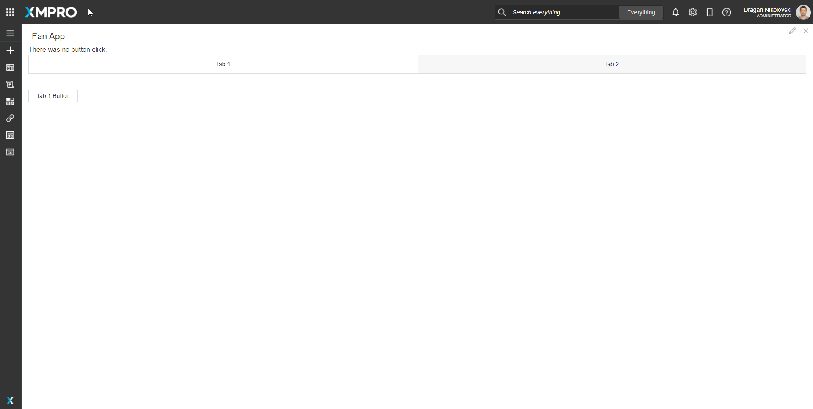
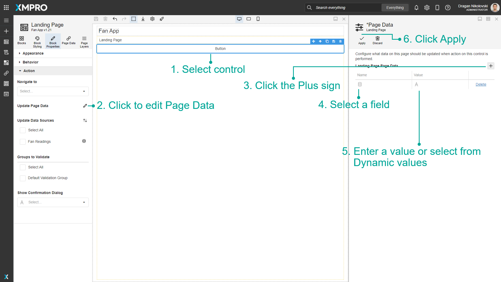
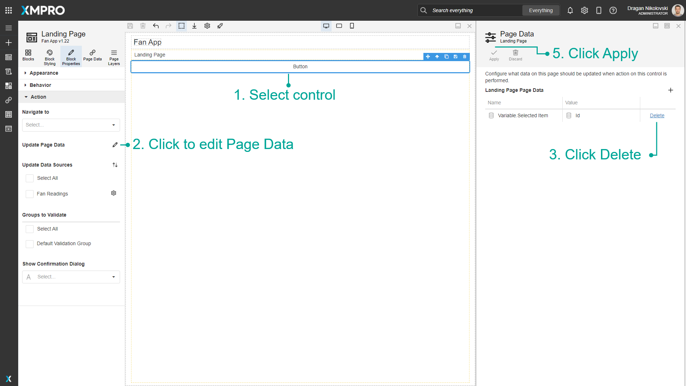

Page Data
You can use Page Data to update the data on the current page when an Action is performed. In the example shown below, each button is configured to update the value of the variable shown in the text control with a different value.

Adding a Page Data to Control
To add Page Data follow the steps below:
- Select the control.
- Click to edit Page Data.
- Click the Plus sign.
- Select a field.
- Enter a value or select from Dynamic values.
- Click Apply.

Removing a Page Data from Control
To remove Page Data follow the steps below:
- Select the control.
- Click to edit Page Data.
- Find the row that you want to be deleted and click Delete.
- Confirm your action.
- Click Apply.

Last modified: May 27, 2025